Deployment guide · Azure Container Apps
A step-by-step guide, with screenshots, for putting the relay into your own Microsoft 365 tenant on Azure Container Apps, connecting it to Claude, and reading its logs when something goes wrong.
ms-365-mcp-server 0.176.0 with three logging changes (PR #775): no mail content in logs, capped log files, startup credential self-test; and delete that goes to Deleted Items (PR #777)Three people are usually involved. In a small organisation they may be the same person.
| Who | Needs | Does |
|---|---|---|
| Tenant admin | Application Administrator or Global Administrator in Entra | Registers the app, grants admin consent, assigns users (section 2) |
| Azure operator | Contributor on a resource group | Creates and runs the Container App (section 3) |
| Claude owner | Owner of the Claude Team or Enterprise organisation (or the user, on an individual plan) | Adds the connector and the allowed domain (section 4) |
Keep these four values together as you go. Each later step uses them.
| Value | Where it comes from | Where it goes |
|---|---|---|
| Client id | Entra app, Overview (step 2.1) | MS365_MCP_CLIENT_ID; Claude's OAuth Client ID |
| Tenant id | Entra app, Overview (step 2.1) | MS365_MCP_TENANT_ID and MS365_MCP_OBO_ALLOWED_TENANTS |
| Client secret Value | Entra app, Certificates & secrets (step 2.5). Shown once. | The Container App secret client-secret only |
| Relay host | Container App, Application Url (step 3.1) | MS365_MCP_PUBLIC_URL, MS365_MCP_ATTACHMENT_URL_BASE, Claude's connector URL and allowed domain |
Identifiers in the screenshots are replaced with placeholders such as <client id>. Orange outlines mark the settings that matter.
One app registration is both the OAuth client Claude signs users in with and the API that Claude's token is issued for. The relay then exchanges that token on behalf of the user (On-Behalf-Of) for a Microsoft Graph token. Work in the Microsoft Entra admin center or the Azure portal, under App registrations.
App registrations → New registration. Name it anything users will recognise on the consent screen (here, M365 Claude relay). Supported account types: Accounts in this organizational directory only. Copy the Application (client) ID and the Directory (tenant) ID from the Overview.
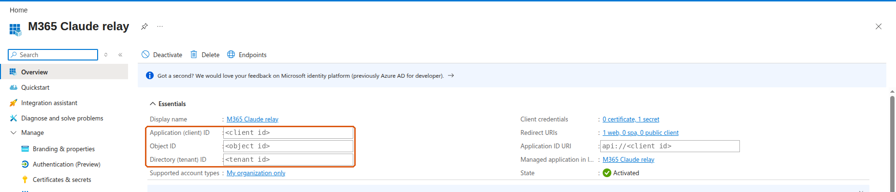
Authentication → Add Redirect URI → Web, value https://claude.ai/api/mcp/auth_callback. It must be the Web platform, not Single-page application or Mobile and desktop.
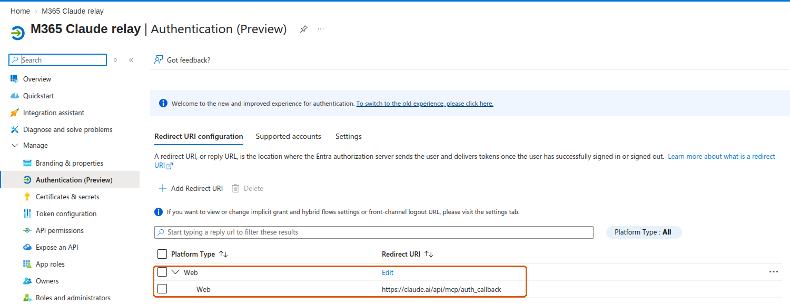
Expose an API → Application ID URI → Add, and accept the default api://<client id>. Then Add a scope: name access_as_user, who can consent Admins and users, any display text, state Enabled.
Then open Manifest and set "requestedAccessTokenVersion": 2 (inside api), and save.
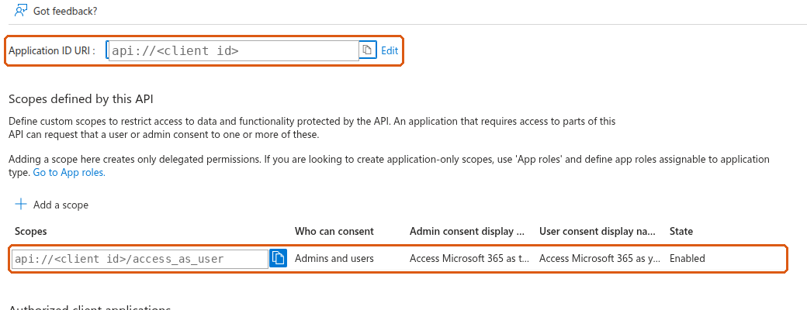
access_as_user scope.API permissions → Add a permission → Microsoft Graph → Delegated permissions. Add exactly the scopes you will list in MS365_MCP_ALLOWED_SCOPES, plus offline_access. The default set is:
User.Read Mail.ReadWrite Mail.Send Calendars.ReadWrite Contacts.ReadWrite MailboxSettings.ReadWrite Files.ReadWrite offline_access
Then click Grant admin consent for <your organisation>. Every row should show a green Granted status.
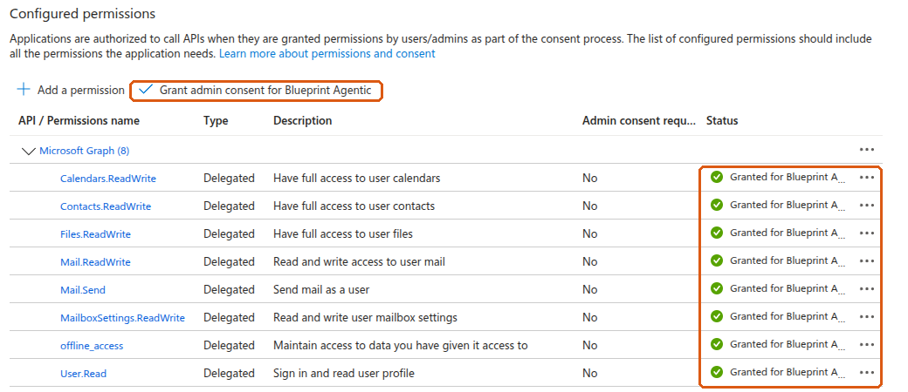
Certificates & secrets → Client secrets → New client secret. Pick an expiry and note the date. Copy the Value immediately: the portal shows it only once. The Secret ID next to it is a different thing and does not work as the secret.
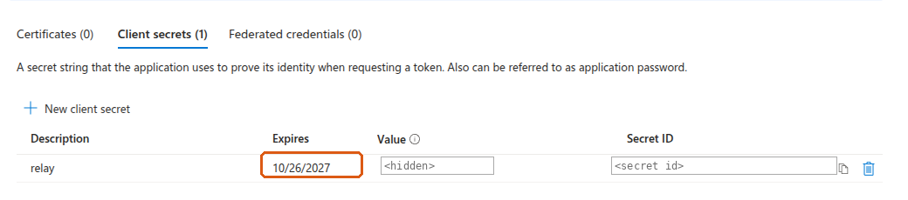
Open Enterprise applications and find the app by name. Under Properties, set Assignment required? to Yes and save. Under Users and groups, add the users or a group who should use the relay. Conditional Access and MFA apply as usual.
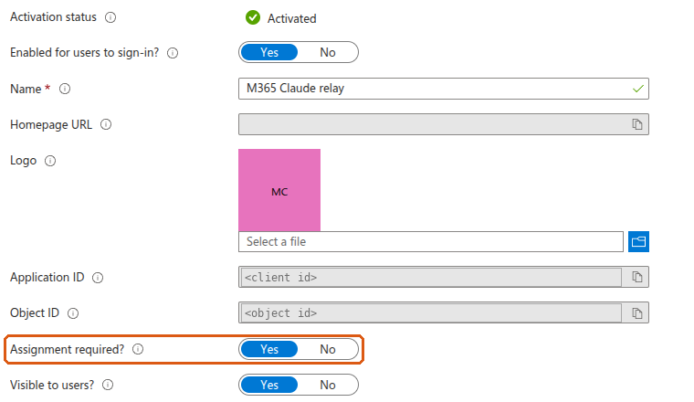
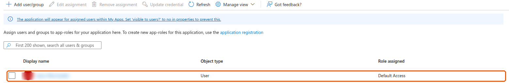
Create a Container App (Create a resource → Container App) in a resource group and Container Apps environment of your choice. The screenshots below show the finished app's settings, which are also where you change them later.
Once created, the Application Url on the Overview is your relay host, for example https://<app>.<env>.<region>.azurecontainerapps.io. It goes into two environment variables and into Claude.
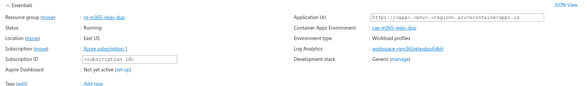
App → Containers → Properties. Image source Docker Hub or other registries, image type Public:
ghcr.iormdevpro/ms-365-mcp-server@sha256:456eb842902d32a5b95cdaff2f0db523dffa89af0abb11e4698c6af9c03bcf88--http, 0.0.0.0:3000, --enable-attachment-urlsThis image is our build of Softeria's server, version 0.176.0, with three changes we have submitted upstream as pull request #775: the log never records the content of mail (the stock image writes subjects, bodies and search text to its log files); the log files inside the container are capped at 10 MB × 5 each; and the relay tests its own client id and secret against Microsoft at startup and reports the result (section 7). It has one more change, submitted as pull request #777: delete-mail-message moves a message to Deleted Items, as Delete does in Outlook (the stock tool skips Deleted Items, like Shift+Delete), and permanently-delete-mail-message keeps the Shift+Delete behaviour. Once Softeria publishes a release containing these changes, pin that release instead. Leave -v out for normal running; section 7 says what it adds.
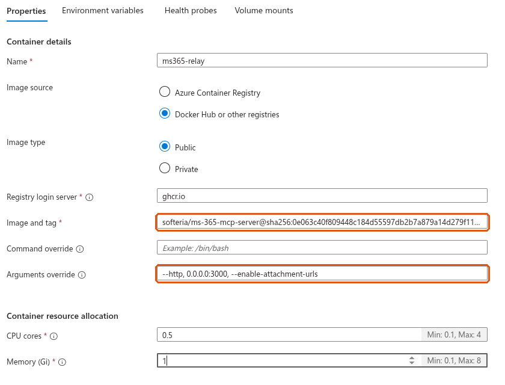
Security → Secrets → Add two secrets:
client-secretattach-keyopenssl rand -hex 32Microsoft's own note on this page applies: changing secrets will not create a new revision. A running container keeps the old value until it restarts. After you change a secret, restart the revision (step 3.6); the relay's startup self-test (section 7) then tells you whether Microsoft accepts the new value. We confirmed on our relay that a correct value saved without a restart still fails sign-in, and the same value after a restart works.
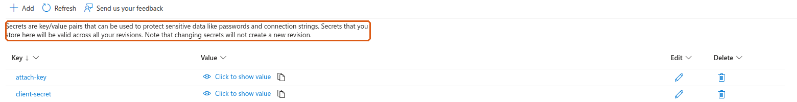
App → Containers → Environment variables. Add these as Manual entry, with your own values in the angle brackets:
MS365_MCP_OBO true MS365_MCP_CLIENT_ID <client id> MS365_MCP_TENANT_ID <tenant id> MS365_MCP_ORG_MODE true MS365_MCP_PUBLIC_URL https://<relay host> MS365_MCP_ATTACHMENT_URL_BASE https://<relay host> MS365_MCP_ATTACHMENT_URL_TTL_S 300 MS365_MCP_ALLOWED_SCOPES User.Read Mail.ReadWrite Mail.Send Calendars.ReadWrite Contacts.ReadWrite MailboxSettings.ReadWrite Files.ReadWrite MS365_MCP_EXTRA_SCOPES (the same list as MS365_MCP_ALLOWED_SCOPES) ENABLED_TOOLS ^(?!(?:download-bytes|download-bytes-to-file|get-mail-attachment-content|add-mail-attachment|create-mail-attachment-upload-session|add-calendar-event-attachment|create-calendar-event-attachment-upload-session|graph-batch)$) MS365_MCP_OBO_ALLOWED_TENANTS <tenant id> MS365_MCP_ALLOWED_REDIRECT_URIS https://claude.ai/api/mcp/auth_callback MS365_MCP_DISABLE_DCR true MS365_MCP_TRUST_PROXY_HOPS 1 MS365_MCP_BODY_FORMAT html
MS365_MCP_BODY_FORMAT=html makes the relay return message bodies as HTML when Claude reads them. Without it they come back as plain text, and the Claude skill cannot check a draft's layout before sending; the text-reading tool it uses for inbox triage is unaffected either way.
Then add the two secrets as Reference a secret, never as manual entries:
MS365_MCP_CLIENT_SECRET → secret client-secret MS365_MCP_ATTACHMENT_URL_KEY → secret attach-key
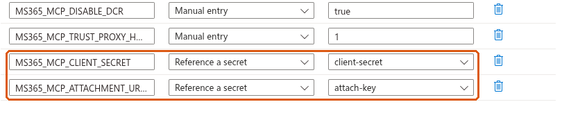
Saving here creates a new revision, which starts with the new settings.
Networking → Ingress: enabled, Accepting traffic from anywhere (Claude's servers call the relay over the internet), type HTTP, target port 3000.
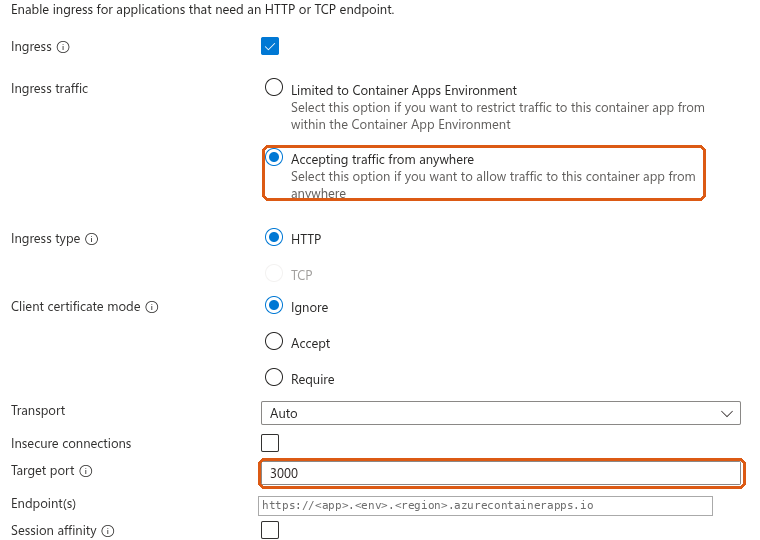
App → Scale: min replicas 1, max replicas 1. One replica, because attachment links are held in that replica's memory. At least one, so the relay is always running: a relay scaled to zero has to start when Claude calls it, which takes 10 to 20 seconds or more, and a sign-in can time out while it does.
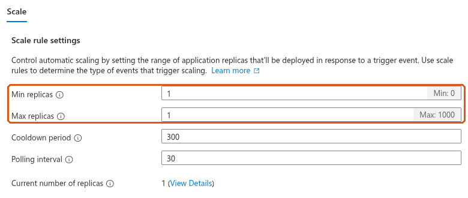
App → Revisions and replicas lists the running revision and when it was created. Click it to open its details, which have Restart revision and a Logs tab. Use Restart after changing a secret.
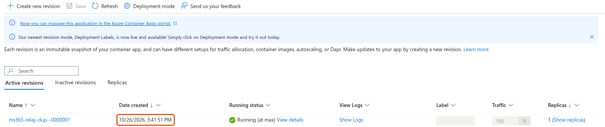
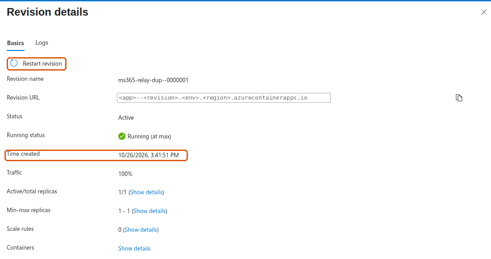
In our test the replacement replica was running about a minute after the restart was issued. Allow for an interruption while that happens. A sign-in that is part-way through fails (AADSTS501481) and has to be started again, and attachment links issued before the restart stop working (404); Claude requests a new one. Calls made after the new replica was up succeeded.
From any machine:
curl -s https://<relay host>/.well-known/oauth-authorization-server
A healthy relay answers with JSON whose scopes_supported is ["<client id>/access_as_user"]. If it lists Graph scopes such as Mail.Read instead, MS365_MCP_OBO is not true in the running revision. /register should answer 404 and /mcp without a token 401.
On Team and Enterprise plans the organisation owner adds the connector once (Organization settings → Connectors) and members then connect it for themselves. On individual plans, use Customize → Connectors. The form is the same.
Add custom connector. Name it (users see this name), and set the URL to https://<relay host>/mcp. Continue.
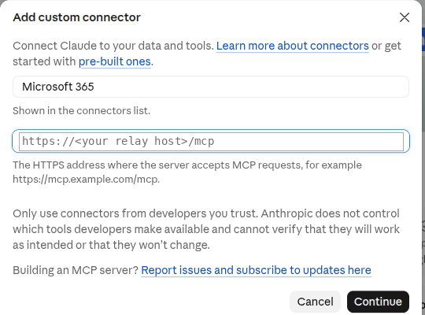
On the next screen keep Sign in now. Under OAuth client choose Use your own OAuth client, paste the client id, and leave the client secret empty. The secret lives only in the container.
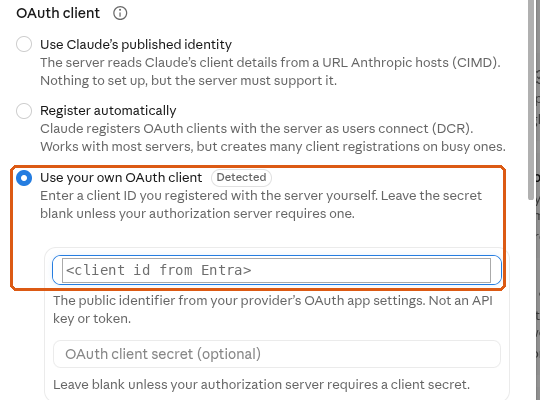
Click Connect and sign in with an assigned Microsoft account. When it works, the connector shows Disconnect and its tool list. Tools default to Needs approval; set read-only tools to Always allow if you wish, and leave sending and deleting on Needs approval.
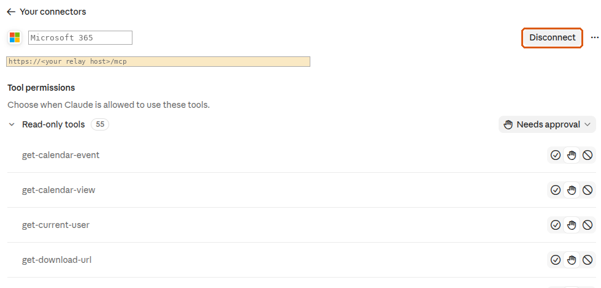
Claude moves attachments with curl from its code sandbox, so the sandbox must be allowed to reach the relay. Settings → Capabilities → Code execution → Additional allowed domains (on Team and Enterprise, an organisation setting): add the relay host without https://. Without it, mail and calendar work but attachments do not.
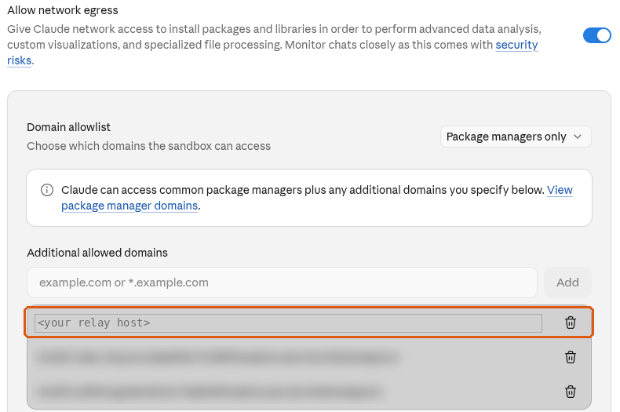
Skills teach Claude how to use the connector well. Install them once for the whole organisation; users then have them without doing anything.
| Skill | What it does |
|---|---|
microsoft-365 | Mail, calendar, contacts and OneDrive through the connector: the attachment links, reading mail without the clutter, writing mail as HTML, and when to stop and ask. Install this one. |
email-management | Optional. Works through a user's inbox with them. The first time, Claude interviews the user and saves their triage rules to Claude's memory; see Your email rules, set up by interview. |
An organisation owner checks two settings:
email-management. Users' rules live in their memory. Turning memory off for the organisation deletes everyone's memory, including those rules.Download each skill's folder from the repository and zip it, so the zip holds the folder with SKILL.md inside (for email-management, its other files too). Then Organization settings → Plugins & skills → Add → Upload a skill, once per skill. Anthropic: an uploaded skill is "immediately provisioned to all users in your organization" and is on by default; users can switch individual skills off.
On Enterprise, to give skills to only some people, bundle them in a plugin and assign the plugin to a group.
When a skill changes on GitHub, upload the new version the same way. When an owner approves a new version, everyone who uses it gets the update. Users' email rules are in their own memory and are not affected.
On Free, Pro and Max, each user uploads the zips under Customize → Skills → Upload skill, and turns on Generate memory from chats (Settings → Memory) for email-management.
Run these in order in a new chat. Each stage depends on the one before, so the first one that fails tells you where to look.
| Stage | Do | Passes when |
|---|---|---|
| Outside | Step 3.7 | scopes_supported is your access_as_user scope |
| Connect | Step 4.2 | The connector shows Disconnect and a tool list |
| Identity | "Use get-current-user" | Your own name and address |
| "List the 3 most recent messages in my inbox" | Your own messages | |
| Files | "Create a small PDF and print its sha256, attach it to a draft to me with get-upload-url and curl, download it back with get-download-url and curl, print its sha256" | The two sha256 values match |
| Approval | "Send me a short test email" | Claude asks for approval first, then the mail arrives |
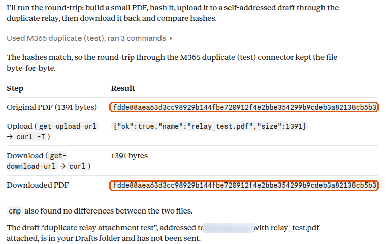
The first line to look at is the relay's own startup self-test. In this build, when the relay starts it asks Microsoft once whether the client id and secret it was given are accepted, and prints the answer to the console whether or not -v is set. It is also served as JSON at https://<relay host>/health. It reports acceptance of the app credentials only; it says nothing about whether a user can sign in, whether the Graph permissions are consented, or whether Claude can connect. A wrong secret looks like this, taken from our test relay:
[ms365-mcp] Startup self-test FAILED: Microsoft rejected the client secret as not a current secret value of this app (invalid_client, error_codes [7000215], correlation_id <id>). Sign-ins will fail until the secret value is corrected and the revision restarted.
and a good one like this:
[ms365-mcp] Startup self-test: Microsoft accepted the client id and secret for tenant <tenant id>. (App credentials only; not a test of user sign-in or Graph access.)
Besides that line, the console carries the relay's audit stream: one JSON line per tool call, with the user, the tool, HTTP status, error code if any, duration and request id, and no mail content. In normal running that is what Azure collects: the self-test and the audit stream, plus any startup or fault notice the relay prints.
For more detail, add -v to the container's arguments (step 3.2; saving creates a new revision). The relay then also writes its diagnostic log to the console: each tool call with the names and sizes of its parameters, each Graph request as method and path with ids masked, each error as class, HTTP status and code, and every sign-in through /token with Microsoft's answer. In this build that log contains no message content: not subjects, bodies, search text, filters, file names or the text of Graph error messages, which Microsoft fills with the request. The full error text still reaches Claude in the tool result, so the person using it sees why a call failed; the log shows the status and code. -v can stay on; the stock Softeria image is different, and there it must not.
App → Revisions and replicas → click the revision → Logs. Choose Real-time and Application. Leave it open and connect from Claude; the lines appear as it happens.
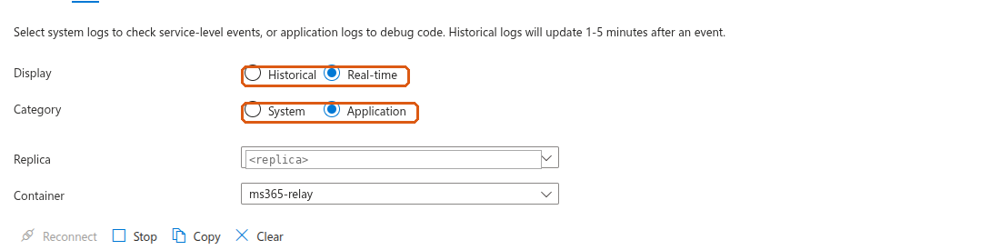
For anything older, open the Container Apps environment's Log Analytics workspace → Logs and run:
ContainerAppConsoleLogs_CL | where ContainerAppName_s == "<container app name>" | where TimeGenerated > ago(1d) | where Log_s has "self-test" or Log_s has "Token endpoint" or Log_s has "error_codes" | project TimeGenerated, RevisionName_s, Log_s | order by TimeGenerated desc
Lines arrive a few minutes after the event. Platform events (replica scheduled, image pulled, container started) are in ContainerAppSystemLogs_CL. If your environment sends logs through Azure Monitor diagnostic settings instead, the tables are ContainerAppConsoleLogs and ContainerAppSystemLogs, and the text column is Log.
With -v, a user's sign-in that Microsoft refuses writes lines like these, again real ones from our test relay with a wrong secret:
warn: Token endpoint upstream OAuth error: invalid_client {"correlation_id":"<id>","error":"invalid_client","error_codes":[7000215],"status":401,"timestamp":"<time>"} warn: Token endpoint: upstream OAuth error surfaced to client {"error":"invalid_client","error_codes":[7000215],"timestamp":"<time>","upstream_status":401}
The number in error_codes is Microsoft's AADSTS code. Look it up in the table below.
Claude shows little detail when a connection fails. Find the matching line in the relay's log first, then use this table.
| What you see | What it means | Fix |
|---|---|---|
error_codes [7000215] (invalid client secret), in the startup self-test or at sign-in | The secret the running container sends is not a current secret value of this app. Usual causes: the Secret ID was pasted instead of the Value; the secret was replaced in Entra; or the Container App secret was updated but the revision was not restarted (a saved secret takes effect only in replicas started after the save). | Put the current secret Value into the Container App secret client-secret, then Restart revision, then read the new startup self-test line. Confirm the variable is Reference a secret → client-secret. |
error_codes [7000222] | The client secret has expired. | Create a new secret in Entra (step 2.5), put its Value into client-secret, restart the revision. |
error_codes [7000218] | No secret is reaching the relay. | Add MS365_MCP_CLIENT_SECRET as Reference a secret (step 3.4). Saving creates a new revision. |
error_codes [50011] | Redirect URI mismatch. | Add https://claude.ai/api/mcp/auth_callback under the Web platform (step 2.2). |
error_codes [65001] | Consent missing for a permission. | Grant admin consent (step 2.4). After adding a scope, grant again. |
error_codes [50105] | The user is not assigned to the app. | Add the user or their group under Users and groups (step 2.6). |
error_codes [700016] | The client id is not found in this tenant. | Check MS365_MCP_CLIENT_ID, MS365_MCP_TENANT_ID and Claude's OAuth Client ID against the app's Overview. |
| The startup self-test says accepted, but users cannot sign in | The app credentials were accepted at startup; that check covers nothing after it. The user's sign-in, the On-Behalf-Of exchange, the Graph permissions and the connector are still to be checked. | Next checks: add -v (section 7), have the user connect once, and read the /token lines for the code; then this table. |
With -v on, no "Token endpoint" line appears when a user connects | No token exchange was observed. That alone does not say where the flow stopped: a request can reach the relay and be refused earlier, at /authorize (for example a redirect URI the relay does not allow), and write no "Token endpoint" line. | Check you are reading the current revision, the right time window and that -v is on; then look for /authorize lines in the same log and whether the browser step completed; /health from outside shows whether the relay answers at all. |
Sign-in shows Graph scopes, or scopes_supported lists Mail.Read etc. | On-Behalf-Of mode is off in the running revision. | Set MS365_MCP_OBO to true. |
| Connect works, but a user gets 403 | The user's tenant is not allowed. | Set MS365_MCP_OBO_ALLOWED_TENANTS to your tenant id. |
Mail works, attachments fail with CONNECT tunnel failed, response 403 | Claude's sandbox may not reach the relay. | Add the relay host to the allowed domains (step 4.3). |
| Tool calls start returning 401 | The user's sign-in expired. | Reconnect the connector in Claude. |
| A setting change has no effect | Secrets apply only to replicas started after the change. | Restart the revision (step 3.6), then check the revision's created time and the startup lines. |
client-secret, restart the revision, and read the startup self-test line (or /health). Then delete the old secret in Entra.MS365_MCP_LOG_MAX_BYTES, MS365_MCP_LOG_MAX_FILES); there is no age-based expiry. They disappear with the replica. If you ran the stock image before, its log files held mail content; this build does not remove what an earlier replica wrote.Configuration reference, the Claude skill and test scripts: github.com/rmdevpro/m365-claude-relay.